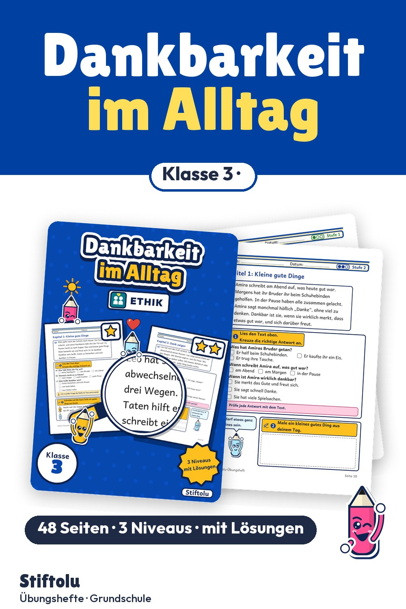

Werbung · Übungsheft von Stiftolu
Dankbarkeit im Ethikunterricht: Gutes bemerken und Dank zeigen, Klasse 3

Sonne, Hilfe, gemeinsames Lachen: In kurzen Alltagsgeschichten bemerken Kinder kleine gute Dinge und unterscheiden Dankbarkeit als Gefühl von einem höflichen Wort. Dank lässt sich mit Worten, Taten und Gesten zeigen, ganz ohne Kosten. Lösungen sind dabei, die 48 Seiten sind erhältlich auf eduki.